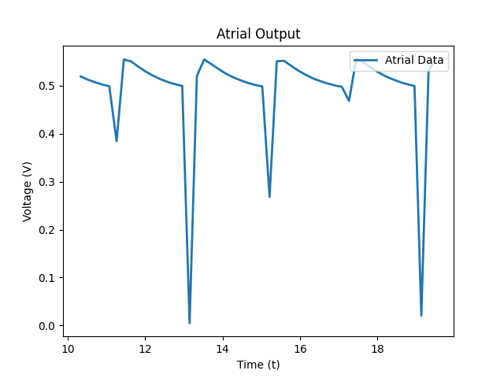
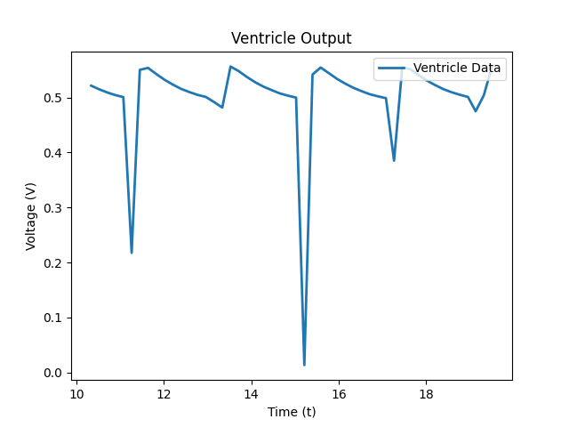
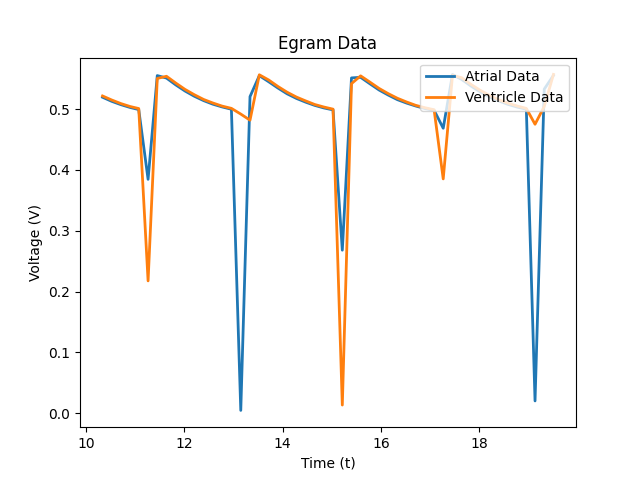
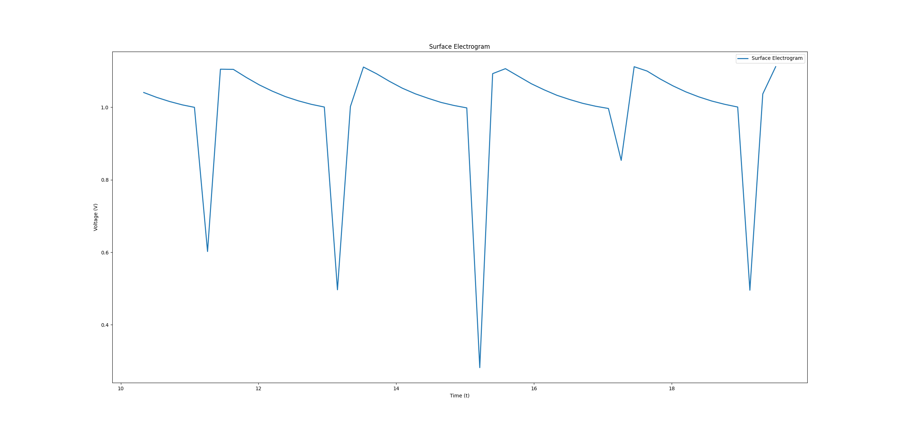

Institution Name: McMaster University
Date and Time: 12:47:2023
Version: PACE++ V2.16.3
Serial Number: 000621000000
| Parameter Name | Value | Unit |
|---|---|---|
| Mode | AOO | |
| Lower Rate Limit | 60 | ppm |
| Upper Rate Limit | 120 | ppm |
| Maximum Sensor Rate | 120 | ppm |
| AV Delay | 15 | |
| Atrial Amplitude | 5.0 | V |
| Ventricular Amplitude | 5.0 | V |
| Atrial Pulse Width | 1 | ms |
| Ventricular Pulse Width | 1 | ms |
| Atrial Sensitivity | 4.0 | mV |
| Ventricular Sensitivity | 4.0 | mV |
| Absolute Refractory Period | 250 | ms |
| Ventricular Refractory Period | 320 | ms |
| Post Ventricular Absolute Refractory Period | 320 | ms |
| Activity Threshold | 4 | |
| Reaction Time | 30 | sec |
| Response Factor | 8 |
The following three figures below are the resultant graphs taken at the time interval chosen when the "print report" button was pressed. Figure 1 depicts the egram data for the electrical acitivity found inside the atrium of the heart paced by the ATR_SIGNAL pin located at A0 on the board. Figure 2 depicts the egram daata for the electrical activatiy related to ventricular pacing done by the VENT_SIGNAL pin located at A1 on the board. From these two graphs, we can look at the resultant graph where we can combine the two to examine the relationship between atrial and ventricular pacing the pacemaker.
Figure 1: Atrial Output Graph
Figure 2: Ventricle Output Graph
Figure 3: Combined Egram Data Graph
Figure 4: Surface Egram Graph